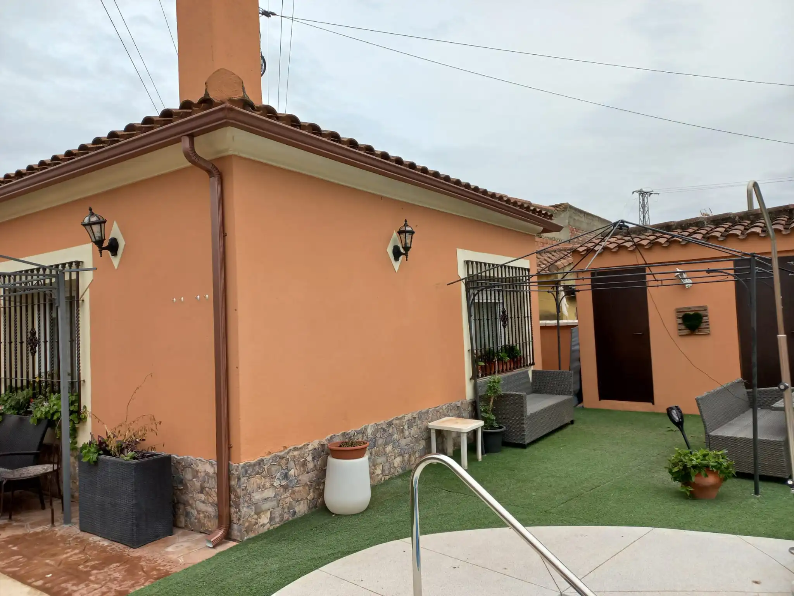
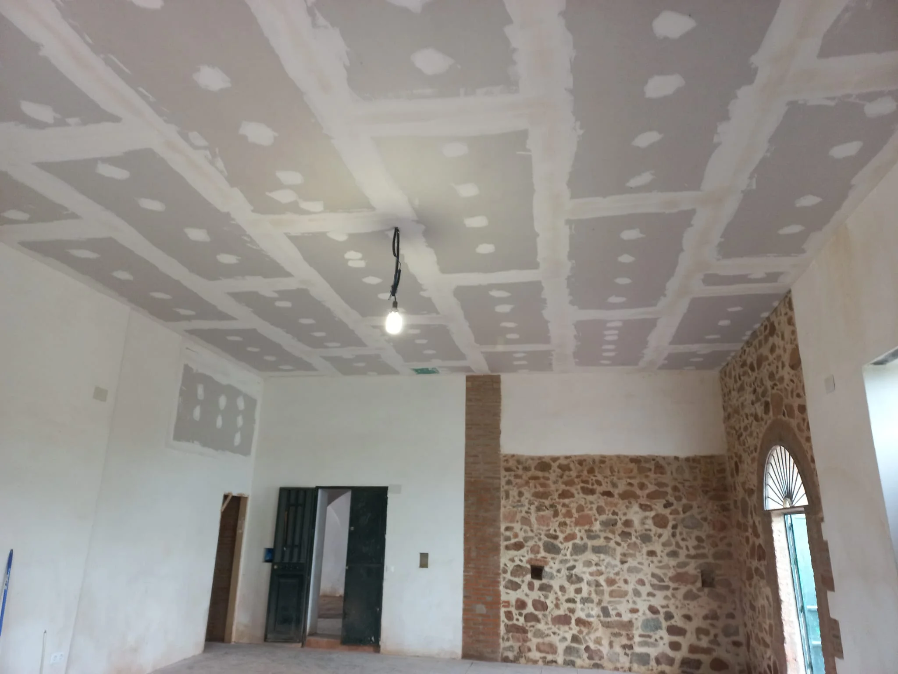

¿Necesitas instalar un canalón en un hogar o un montaje de pladur?
Aseguramos tener la mejor instalación de canalones en Córdoba y el mejor montaje de pladur de la provincia.
Instalación de Canalones
La gran importancia de la instalación de un canalón en su tejado es evitar la aparición de goteras y la acumulación de agua en su tejado generando problemas estructurales en su edificio.
También nos encargamos de la Limpieza de canalones porque se haya creado un atasco en él para que pase el agua bien y sea capaz de bajar por el canalon, si no lo limpiamos puede generar problemas con goteras, humedades...
En Canalplad utilizamos el canalón llamado "Cornisa", cuenta con una gran calidad en susmateriales, una gran variedad de colores y destaca por su gran estética en la fachada. Cornisa se adapta a todo tipo de construcciones cumpliendo a la perfección con su tarea. En este modelo de Canalón podemos poner un chorro o añadirle un bajante.
Catálogo Colores
Blanco
Crema
Cobre
Pizarra
Gris
Antracita
Rosado
Marrón
Teja Vieja
Verde
Azul
Bronce
Si necesitas más información sobre la instalación de canalones no dudes en ponerte en contacto con nosotros.
Montaje de Pladur
Es un material no inflamable, esto es, ignífugo. Una de los mayores beneficios del pladur es que retarda la propagación del fuego.
Mejora el aislamiento térmico y acústico de paredes y techos. Posee una alta resistencia a la humedad. El montaje es rápido y limpio. Simplifica el proceso y mejora su nivel de calidad.
¿Por qué debemos colocar pladur?
SE UTILIZA EN TODO TIPO DE OBRAS
PODRÁS PINTARLO, EMPAPELARLO Y ALICATAR SOBRE ÉL
SE PUEDE COLOCAR EN TECHOS
SIRVE PARA LEVANTAR TABIQUES DE DISTRIBUCIÓN, DE SEPARACIÓN Y PARA REVESTIR MUROS.